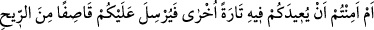
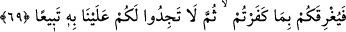
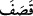
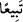

yerin altına geçirmesinden emin olmayınız. O sizi denizde gark etmeye kâdir olduğu gibi
karada da yerin altına geçirmeye kadirdir.”
“Yahut başınıza taş yağdırmayacağından” üzerinize küçük taşlar savuran bir kasırga
göndermeyeceğinden “emin misiniz?” kurtuldunuz ve bu sayılanlardan emin mi
oldunuz?
Böyle bir kasırga sizin için denizde boğulmaktan daha beterdir. Bunun anlamının Lût
(a.s.)’ın kavmine ve Fil ordusuna gönderdiği gibi sizin üzerinize de taşlar
yağdırmayacağından emin misiniz? şeklinde olduğu da söylenilmiştir.
“Sonra kendinize” sizi bundan koruyacak ve bunu sizden uzaklaştıracak “bir
koruyucu da bulamazsınız.” Çünkü onun emrine karşı koyacak hiçbir şey yoktur.
69. Yahut O’nun, sizi bir kez daha oraya (denize) gönderip üzerinize bir kasırga
yollayarak, inkâr etmiş olmanız sebebiyle sizi boğmayacağından emin misiniz?
Sonra, bundan dolayı kendinize (intikamınızı almak için) bizi arayıp soracak bir
destekçi de bulamazsınız.
“Yahut O’nun, sizi” karaya çıkıp selâmete kavuşmanızdan sonra, sizi oraya dönmek
zorunda bırakacak sebepleri yaratarak neticede gemilere binmenizi sağlamak sûretiyle
“bir kez daha oraya” denize “gönderip” siz denizdeyken “üzerinize” üzerinden geçtiği
her şeyi kırıp geçiren, un ufak eden “bir kasırga yollayarak inkâr etmiş olmanız”
Allah’a ortak koşmanız ve sizi kurtarma nimetine nankörlük etmeniz “sebebiyle”, “
” kelimesinin de işâret ettiği şekilde geminizi parçaladıktan sonra “sizi
boğmayacağından emin misiniz?”
“Sonra, bundan dolayı kendinize” intikam almak veya bunu sizden uzaklaştırmak için
“bizi arayıp soracak bir destekçi de bulamazsınız.” el-Kâmûs’ta şöyle der: “
”,
takip eden anlamındadır. Bu ifâde de bu anlamdadır. Yâni sizin için intikam alan ve
arayıp soran birini bulamazsınız.
Bu âyetlerde bâzı işâretler vardır. Bunlarda biri şudur: Şerîat, hakîkat denizinde bir
gemi gibidir. Bu gemi olmasa hiç kimsenin hakîkat denizinden geçmesi mümkün olmaz.
Bundan maksad inâyet cezbesidir. Çünkü, insanların kendi çabalarıyla elde edilemez.
Aksine lütuf kabilindendir. Bu cezbeye ulaşmak isteyen kimsenin, ilim ve amel
ayaklarıyla yürümesi gerekir.
Mesnevî’de şöyle der:
Tarikat sâliklerinin âdeti şudur: